Surface area and surface integrals
| > | restart; with(LinearAlgebra): with(VectorCalculus): with(plots): |
Warning, the names &x, CrossProduct and DotProduct have been rebound
Warning, the assigned names <,> and <|> now have a global binding
Warning, these protected names have been redefined and unprotected: *, +, ., D, Vector, diff, int, limit, series
Warning, the name changecoords has been redefined
| > | setoptions3d(axes=boxed); |
Parametric surfaces
A surface can in principle be described by a two-parameter vector function.
As usual, it's a good idea to tell Maple that the parameters are real.
| > | assume(u,real,v,real); |
For example, the cone
| > | implicitplot3d( x^2+y^2=z^2, x=-1..1, y=-1..1, z=-1..1 ); |
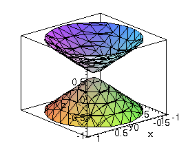
is much better displayed in parametric form. (Here we mean the position vector r, not the cylindrical coordinate r.)
| > | r:= [ u*cos(v), u*sin(v), u ]; |
Note here that x^2 + y^2 does in fact equal z^2:
| > | simplify(r[1]^2 + r[2]^2 - r[3]^2 ); |
| > | plot3d( r, u=-1..1, v=0..2*Pi ); |
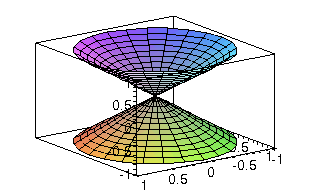
A sphere is naturally expressed when the two parameters are the angles in spherical coordinates.
| > | r:= [ 2*sin(u)*cos(v), 2*sin(u)*sin(v), 2*cos(u) ]; |
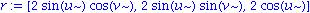
| > | plot3d( r, u=0..Pi, v=0..2*Pi, scaling=constrained ); |
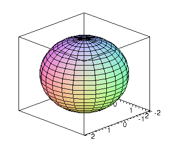
Parameterizations are not unique:
| > | p1:= plot3d( [ x,y,x^2+y^2 ], x=-1..1, y=-1..1, color=red): |
| > | p2:= plot3d( [ u*cos(v), u*sin(v), u^2 ], u=0..sqrt(2), v=0..2*Pi, color=blue, style=wireframe ): |
| > | display( p1, p2 ); |
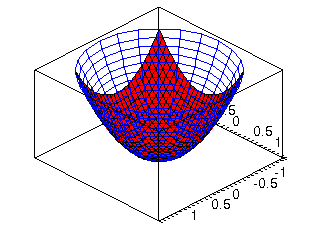
In addition to the sin/cos parameterization trick, there is also a sinh/cosh trick for hyperbolic surfaces.
| > | r:= [ cosh(u)*cos(v), cosh(u)*sin(v), sinh(u) ]; |
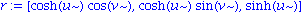
On a one-sheet hyperboloid, x^2 + y^2 - z^2 = 1.
| > | simplify( r[1]^2 + r[2]^2 - r[3]^2 ); |
| > | plot3d( r, u=-1..1, v=0..2*Pi ); |
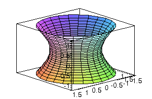
Here is a fancy parameterization: the torus.
| > | torus:= [ (2+cos(u))*cos(v), (2+cos(u))*sin(v), 2+sin(u) ]; |
| > | plot3d( torus, u=0..2*Pi, v=0..2*Pi, scaling=constrained ); |
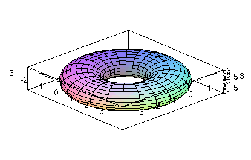
Surface integrals
Once you have a parameterization, surface area (as well as other surface integrals) is straightforward.
Example: Surface area of the torus above.
| > | r:= < (2+cos(u))*cos(v), (2+cos(u))*sin(v), 2+sin(u) >; |
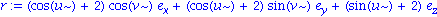
| > | ru:= diff( r ,u ); |
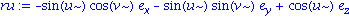
| > | rv:= diff( r ,v ); |
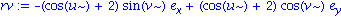
| > | dS:= simplify( Norm( ru &x rv, 2 ) ); |
| > | A:= int( dS, [u,v]=Region(0..2*Pi,0..2*Pi) ); |
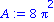